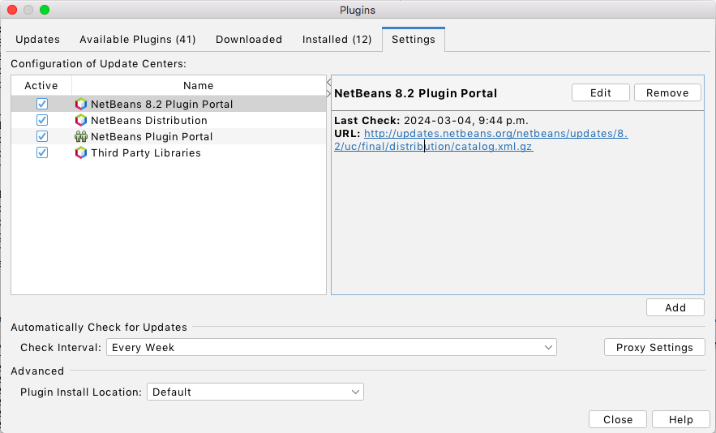

Loading...
Searching...
No Matches
bezier_geometry
Intersection and collision detection for shapes consisting of quadratic Bézier curves.
Requirements
Initial generation of makefiles can be done by opening the project in NetBeans after installing the CPPLite plugin:
 
This will allow for convenient editing in isolation in addition to the use of preconfigured unit tests. However, all code is standard C++11, and may also be included in any project as simple source and header files.
Contributing
The code format uses the LLVM clang-format style:
clang-format --style=LLVM -i $(find . -type f -name "*.cpp" -o -name "*.hpp")
Generated by